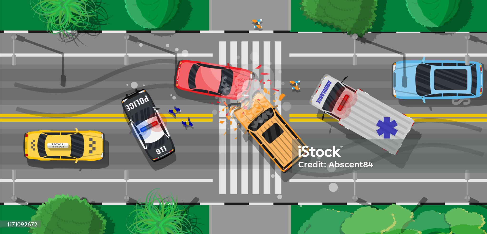

Scenario 3: GPS Failure and Pedestrian Crossing Red Light
Setting:You are in an autonomous vehicle driving through a busy city street. The vehicle is in full autonomous mode, using GPS to navigate the complicated urban environment. As you approach an intersection, the dashboard suddenly flashes a warning: "GPS Signal Lost. Immediate Decision Required." Almost simultaneously, you notice a pedestrian hastily crossing the street against a red light, directly in the path of your vehicle. The car detects the pedestrian but, without GPS, it is unsure of its exact positioning relative to the traffic lights and crosswalk.
Options for Action:
- Immediate Stop The vehicle can come to an immediate stop where it is, even though this might be in the middle of the intersection. This would most likely avoid hitting the pedestrian but could potentially result in a rear-end collision with vehicles following closely behind.
- Risk: Option 1 By stopping immediately, the vehicle prioritizes the safety of the pedestrian. However, this could lead to a rear-end collision from a vehicle following closely behind, potentially causing injury to both yourself and the occupants of the other vehicle.
- Rely on Onboard SensorsThe vehicle can ignore the GPS failure for a moment and rely solely on its onboard cameras and other sensors to attempt a more controlled, safe maneuver to avoid the pedestrian while also avoiding any collision with other vehicles. However, this is risky as the sensors were calibrated to work in conjunction with the GPS.
- Risk: Option 2 This option seeks a balance, trying to avoid hitting the pedestrian while also minimizing the risk of a collision with other vehicles. However, since the onboard sensors were calibrated to work in conjunction with GPS, their effectiveness could be compromised, potentially leading to miscalculations and accidents.
